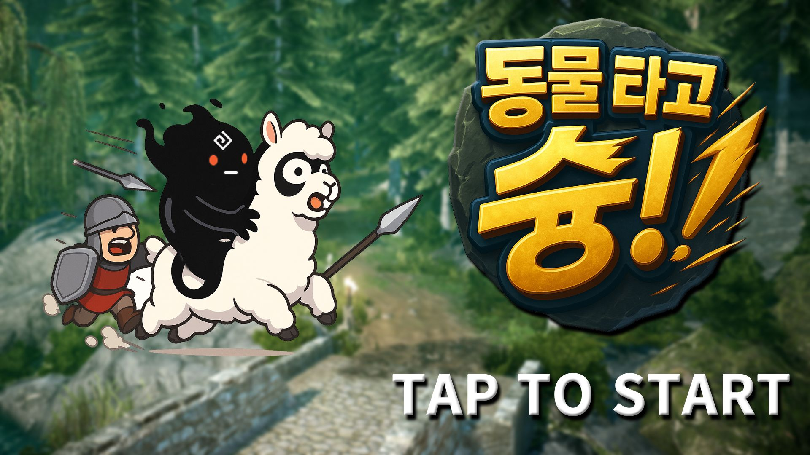
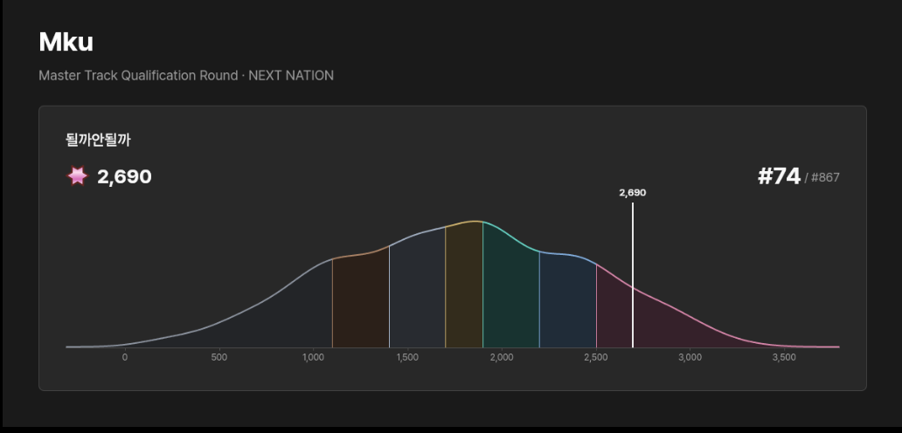

01
PEARL ABYSS

펄어비스 만나모 참가작
동물타고 슝!
최종 결과
장려상
대회 설명 보기↗
COMPETITION
두 번의 도전과 두 개의 결과입니다.

펄어비스 만나모 참가작

Master Track · 2,690점
PROJECT 01
MIDI 시퀀서와 신디사이저,
기타 연주 보조 기능을 하나로 만든 프로그램입니다.
PROJECT 02
Blender에서 메시를 자르고 파손 조각을 만들어
Unity로 내보내는 제작 도구입니다.
PROJECT 03
몇 개의 컨트롤 본만 움직여
캐릭터의 전신 포즈를 만드는 Blender 애드온입니다.
PROJECT 04
Game·App·Web UI를 설계하고
즉시 동작을 확인하는 데스크톱 편집 도구입니다.
PROJECT 05 · CAPSTONE 2026
기억을 조합해 싸우고 죽음을 넘어 성장하는
Unity 액션 게임과 프로젝트 허브입니다.